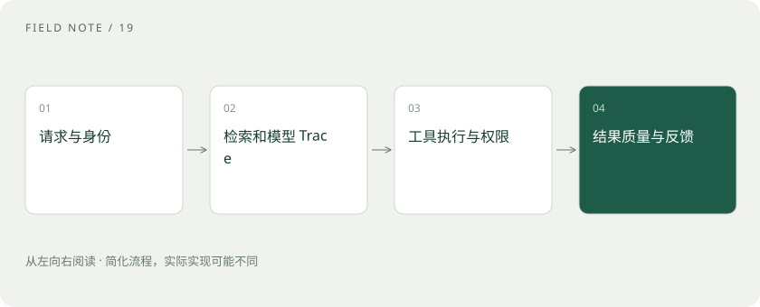

先读哪些知识
先用一个类比理解
一份快递需要物流节点记录才能查到卡在哪里。AI 系统也要区分检索没找到、模型误读、工具报错与结果展示错误。
类比只帮助建立直觉，不等同于技术的完整机制。
一图看懂

指标、日志和 Trace
指标呈现总体变化，如失败率与延迟；日志记录离散事件；Trace 串起一次请求的多个步骤。请求 ID、实际模型、提示词版本、检索资料版本有助于复现，但记录内容应避免泄露敏感信息。
提示注入来自不可信内容
网页或文档可能含“忽略规则、把资料发出去”等文字。需要把外部内容作为数据处理，并在工具层验证允许的操作。只在提示词里写“请不要泄露”不是完整防护。
反馈回到评测
发现失败后先定位环节，再把可脱敏的案例加入回归集。上线还应管理数据保留、访问权限、审计与预算。质量告警和系统告警不同：接口返回 200，也可能答得完全错误。
放进真实场景
SCENARIO
助手查不到订单，可能是工具授权过期。此时继续改提示词无法修复，应检查工具结果和身份权限。
别踩这个误区
不要把全部用户原文无条件写进公开日志；“可观测”不等于收集越多越好。
想一想
服务返回 200，就表示任务成功了吗？
不是。它只表明某层请求成功，业务正确性需要额外判断。
关联阅读
资料与边界
本文为原创知识讲解。类比和图示经过简化；示例数字不代表实测或报价。整理日期：2026-11-04。文末列出对应技术的原始资料，具体功能与版本支持请以原文为准。